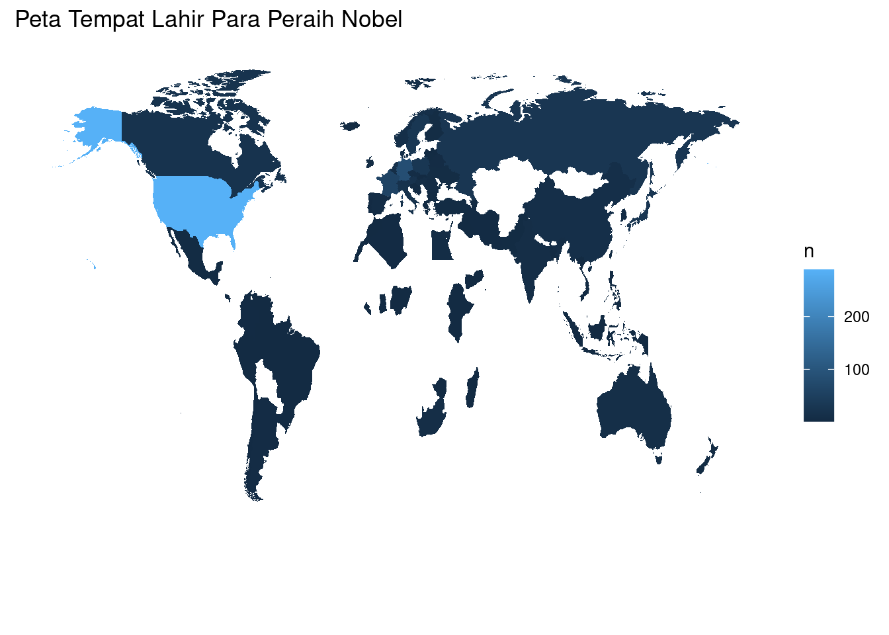

Lihat Kode
# Memuat library
library(dplyr)
library(tidyr)
library(ggplot2)
library(ggthemes)
# Membaca dataset Nobel Prize
nobelkotor <- read.csv('datasets/nobel-prize-laureates.csv')Penghargaan Nobel mungkin adalah salah satu penghargaan paling terkenal di dunia ilmu pengetahuan. Selain kehormatan, gengsi, dan nominal uang yang tidak sedikit, penerima Nobel juga mendapatkan medali emas yang terdapat cetakan Alfred Nobel (1833 - 1896), sang pencetus penghargaan tersebut. Setiap tahunnya penghargaan tersebut diberikan pada ilmuwan dan para sarjana di bidang kimia, sastra, fisika, psikologi atau kesehatan, ekonomi, dan perdamaian. Penghargaan Nobel pertama kali diberikan pada tahun 1901, dan saat itu penghargaan tersebut sangatlah Eropa-sentris dan sebagian besar didapatkan oleh pria. Benarkah demikian?

Mari kita cari tahu! Yayasan Nobel telah membuat dataset yang berisi semua pemenang penghargaan dari 1901 sampai 2022. Pertama-tama, kita akan memuat dataset yang akan kita pakai:
# Memuat library
library(dplyr)
library(tidyr)
library(ggplot2)
library(ggthemes)
# Membaca dataset Nobel Prize
nobelkotor <- read.csv('datasets/nobel-prize-laureates.csv')Sebelum melakukan Exproratory Data Analysis (EDA), hal yang biasa dilakukan oleh seorang analis adalah melakukan pembersihan data dan membenarkan tipe data:
# Membersihkan data yang takkan dipakai, memisahkan Geo.Shape menjadi Latitude dan Longitude
nobelbersih2 <- subset(nobelkotor, select = -c(Overall.motivation, Geo.Shape)) %>%
arrange(Id) %>%
separate(Geo.Point.2D, into = c('Lat', 'Lon'), sep = ",")
# Menghapus sisa spasi yang ada di dalam kolom
nobelbersih2$Lat <- trimws(nobelbersih2$Lat)
nobelbersih2$Lat <- as.double(nobelbersih2$Lat)
nobelbersih2$Lon <- trimws(nobelbersih2$Lon)
nobelbersih2$Lon <- as.double(nobelbersih2$Lon)
# Mengubah tipe data Born (tanggal lahir) dan Died (tanggal wafat) menjadi tipe Date (tanggal)
nobel <- nobelbersih2 %>%
mutate_at(c('Born', 'Died'), as.Date)
# Mengubah string kosong menjadi NA
nobel[nobel == ''] <- NA# Memuat file dunia
world_country <- read.csv('datasets/world_country_and_usa_states_latitude_and_longitude_values.csv')
# Membuang kolom yang tidak diinginkan
world_country <- subset(world_country, select = -c(usa_state_code, usa_state_latitude, usa_state_longitude, usa_state))
# Menghilangkan values yang kosong
world_country <- drop_na(world_country)head(nobel%>%select(-Motivation), 5)| Id | Firstname | Surname | Born | Died | Born.country | Born.country.code | Born.city | Died.country | Died.country.code | Died.city | Gender | Year | Category | Organization.name | Organization.city | Organization.country | Lat | Lon |
|---|---|---|---|---|---|---|---|---|---|---|---|---|---|---|---|---|---|---|
| 1 | Wilhelm Conrad | Röntgen | 1845-03-27 | 1923-02-10 | Prussia (now Germany) | DE | Lennep (now Remscheid) | Germany | DE | Munich | male | 1901 | Physics | Munich University | Munich | Germany | 51.10627 | 10.381711 |
| 2 | Hendrik A. | Lorentz | 1853-07-18 | 1928-02-04 | the Netherlands | NL | Arnhem | the Netherlands | NL | NA | male | 1902 | Physics | Leiden University | Leiden | the Netherlands | 52.07242 | 5.221592 |
| 3 | Pieter | Zeeman | 1865-05-25 | 1943-10-09 | the Netherlands | NL | Zonnemaire | the Netherlands | NL | Amsterdam | male | 1902 | Physics | Amsterdam University | Amsterdam | the Netherlands | 52.07242 | 5.221592 |
| 4 | Henri | Becquerel | 1852-12-15 | 1908-08-25 | France | FR | Paris | France | FR | NA | male | 1903 | Physics | École Polytechnique | Paris | France | 42.18203 | -2.754422 |
| 5 | Pierre | Curie | 1859-05-15 | 1906-04-19 | France | FR | Paris | France | FR | Paris | male | 1903 | Physics | École municipale de physique et de chimie industrielles (Municipal School of Industrial Physics and Chemistry) | Paris | France | 42.18203 | -2.754422 |
Dengan melihat lima orang awal pemenang penghargaan, atau yang biasa disebut sebagai Nobel laureates, kita dapat melihat seseorang: Wilhelm Conrad Rontgen. Mungkin kita langsung tahu apa kontribusi beliau dalam ilmu pengetahuan. Yep, ia adalah penemu mesin X-ray, yang biasa disebut oleh masyarakat sebagai mesin Rontgen (ronsen). Menariknya, kita bisa lihat bahwa semua pemenang Nobel tahun 1901 berasal dari Eropa. Lalu, bagaimana dengan pemenang Nobel dari 1901 sampai 2022?
# Menampilkan jumlah peraih Nobel
nrow(nobel)[1] 989# Menampilkan angka pemenang Nobel berdasarkan jenis kelamin
nobel %>%
count(Gender, sort = TRUE)| Gender | n |
|---|---|
| male | 898 |
| female | 61 |
| org | 30 |
# Menyatukan data Nobel dan world_country untuk mendapatkan tempat lahir peraih Nobel lebih akurat
nobel_country <- merge(nobel, world_country, by.x='Born.country.code', by.y='country_code', all.x = TRUE)
# Menampilkan angka pemenang Nobel berdasarkan negara asal
nobel_country_count <- nobel_country %>%
count(country, sort = TRUE) %>%
mutate(country = recode(country, 'United States' = 'USA'))
head(nobel_country_count, 10)| country | n |
|---|---|
| USA | 289 |
| United Kingdom | 106 |
| Germany | 84 |
| France | 59 |
| NA | 31 |
| Sweden | 30 |
| Poland | 29 |
| Japan | 28 |
| Russia | 28 |
| Canada | 21 |
# Mendapatkan data dunia
world_map <- map_data("world")
# Membuat peta para peraih Nobel berdasarkan negara
ggplot(nobel_country_count, aes(map_id = country)) +
geom_map(aes(fill = n), map = world_map) +
expand_limits(x=world_map$long, y=world_map$lat) +
labs(title = "Peta Tempat Lahir Para Peraih Nobel") +
theme(axis.text.x = element_blank(),
axis.text.y = element_blank(),
axis.ticks = element_blank(),
axis.title.x = element_blank(),
axis.title.y = element_blank(),
rect = element_blank())
Menariknya, jika kita melakukan proses menyatukan data Nobel dan World_country di atas, kita akan mendapatkan tempat tanggal lahir negara dalam konteks sosial-politik zaman sekarang. Sebenarnya, hal ini dilakukan untuk mempermudah pembuatan peta para peraih Nobel di atas. Kelebihan lain dari metode ini adalah kita akan mendapatkan data peraih Nobel yang lahir di Indonesia. Pemenang itu ialah Willem Einthoven. Hal ini tentu akan lebih sulit kita dapatkan jika tanpa menggunakan data world_country, karena dalam data Nobel, Einthoven tertulis lahir di Java Dutch East Indies (now Indonesia). Hal ini dapat terjadi karena pada saat Einthoven lahir, Semarang masih berada dalam kekuasaan Pemerintah Kolonial Hindia Belanda.
# Mendapatkan data peraih Nobel kelahiran Indonesia
nobel_country %>%
filter(country == 'Indonesia')| Born.country.code | Id | Firstname | Surname | Born | Died | Born.country | Born.city | Died.country | Died.country.code | Died.city | Gender | Year | Category | Motivation | Organization.name | Organization.city | Organization.country | Lat | Lon | latitude | longitude | country |
|---|---|---|---|---|---|---|---|---|---|---|---|---|---|---|---|---|---|---|---|---|---|---|
| ID | 315 | Willem | Einthoven | 1860-05-21 | 1927-09-29 | Java Dutch East Indies (now Indonesia) | Semarang | the Netherlands | NL | Leiden | male | 1924 | Medicine | “for his discovery of the mechanism of the electrocardiogram” | Leiden University | Leiden | the Netherlands | 52.07242 | 5.221592 | -0.789275 | 113.9213 | Indonesia |

Tentunya bukan hal yang mengejutkan jika Amerika Serikat menjadi negara dengan jumlah penerima Nobel terbanyak di dunia. Tetapi, di tahun 1901 sebagian besar pemenang Nobel adalah orang Eropa. Kapankah AS mulai mendominasi penghargaan Nobel?
# Menghitung proporsi orang Amerika pemenang Nobel
nobel$usa_born_winner <- nobel$Born.country == 'USA'
floor_decade <- function(value){ return(value - value %% 10) }
nobel$decade <- floor_decade(nobel$Year)
prop_usa_winners <- nobel %>%
group_by(decade) %>%
summarize(mean_usa = mean(usa_born_winner, na.rm = TRUE))
prop_usa_winners| decade | mean_usa |
|---|---|
| 1900 | 0.0178571 |
| 1910 | 0.0789474 |
| 1920 | 0.0740741 |
| 1930 | 0.2545455 |
| 1940 | 0.3250000 |
| 1950 | 0.2957746 |
| 1960 | 0.2800000 |
| 1970 | 0.3203883 |
| 1980 | 0.3297872 |
| 1990 | 0.4158416 |
| 2000 | 0.4369748 |
| 2010 | 0.3333333 |
| 2020 | 0.4285714 |
Setelah melihat tabel di atas, tentunya agak sulit dimengerti jika hanya melihat data mentah. Maka, mari kita membuat visualisasinya.
# Membuat visualisasi
ggplot(prop_usa_winners, aes(x=decade, y=mean_usa)) +
geom_line() +
labs(title="Dominasi Amerika Serikat dalam Penghargaan Nobel")
# Membuat pengelompokan berdasarkan kategori Nobel
prop_category <- nobel %>%
group_by(decade, Category) %>%
summarize(mean = mean(usa_born_winner, na.rm = TRUE))
ggplot(prop_category, aes(x=decade, y=mean, color=Category)) +
geom_line() +
labs(title="Dominasi AS per Kategori Nobel") +
theme_few()
Sebelumnya, kita sudah melihat bahwa ada perbedaan jumlah yang cukup besar dalam peraihan Nobel antara pria dan wanita. Lalu, kategori apa saja yang umum ditempuh oleh wanita dalam ilmu pengetahuan?
# Menghitung proporsi pemenang wanita per dekade
nobel$female_winner <- nobel$Gender == 'female'
prop_female_winners <- nobel %>%
group_by(decade, Category) %>%
summarize(mean_fem = mean(female_winner, na.rm = TRUE))
# Membuat plot
ggplot(prop_female_winners, aes(x=decade, y=mean_fem, color=Category)) +
geom_line() +
labs(title="Wanita dalam Penghargaan Nobel per Kategori Ilmu") +
theme_few()Plot di atas walau terlihat agak berantakan, namun ia memperlihatkan tren dan pola yang cukup menarik. Wanita pemenang Nobel lebih banyak berkiprah di bidang sastra, kimia, dan perdamaian. Walau tren di bidang kesehatan cukup banyak di tahun 1990-an, namun menurun hingga tahun 2022.
Melihat data di atas, mungkin muncul rasa penasaran: “Siapakah wanita pertama yang memenangkan penghargaan Nobel? Kategori apa?”
# Mengambil data wanita pertama peraih Nobel
first_female <- head(nobel %>%
filter(Gender == 'female') %>%
arrange(Year), 1)
# Print wanita pertama
first_female%>%select(-Motivation)| Id | Firstname | Surname | Born | Died | Born.country | Born.country.code | Born.city | Died.country | Died.country.code | Died.city | Gender | Year | Category | Organization.name | Organization.city | Organization.country | Lat | Lon | usa_born_winner | decade | female_winner |
|---|---|---|---|---|---|---|---|---|---|---|---|---|---|---|---|---|---|---|---|---|---|
| 6 | Marie | Curie | 1867-11-07 | 1934-07-04 | Russian Empire (now Poland) | PL | Warsaw | France | FR | Sallanches | female | 1903 | Physics | NA | NA | NA | NA | NA | FALSE | 1900 | TRUE |

Untuk sebagian besar ilmuan/penulis/aktivis, memenangkan penghargaan Nobel tentu saja menjadi sebuah pencapaian luar biasa. Tetapi untuk beberapa orang, satu itu tidak cukup, beberapa dari mereka memenangkan penghargaan tersebut lebih dari satu kali. Siapa saja orang yang beruntung itu?
dup_name <- nobel %>%
group_by(Firstname, Surname) %>%
filter(n()>1)
dup_name%>%select(-Motivation)| Id | Firstname | Surname | Born | Died | Born.country | Born.country.code | Born.city | Died.country | Died.country.code | Died.city | Gender | Year | Category | Organization.name | Organization.city | Organization.country | Lat | Lon | usa_born_winner | decade | female_winner |
|---|---|---|---|---|---|---|---|---|---|---|---|---|---|---|---|---|---|---|---|---|---|
| 6 | Marie | Curie | 1867-11-07 | 1934-07-04 | Russian Empire (now Poland) | PL | Warsaw | France | FR | Sallanches | female | 1911 | Chemistry | Sorbonne University | Paris | France | 42.18203 | -2.754422 | FALSE | 1910 | TRUE |
| 6 | Marie | Curie | 1867-11-07 | 1934-07-04 | Russian Empire (now Poland) | PL | Warsaw | France | FR | Sallanches | female | 1903 | Physics | NA | NA | NA | NA | NA | FALSE | 1900 | TRUE |
| 66 | John | Bardeen | 1908-05-23 | 1991-01-30 | USA | US | Madison WI | USA | US | Boston MA | male | 1972 | Physics | University of Illinois | Urbana IL | USA | 45.68753 | -112.494334 | TRUE | 1970 | FALSE |
| 66 | John | Bardeen | 1908-05-23 | 1991-01-30 | USA | US | Madison WI | USA | US | Boston MA | male | 1956 | Physics | University of Illinois | Urbana IL | USA | 45.68753 | -112.494334 | TRUE | 1950 | FALSE |
| 217 | Linus | Pauling | 1901-02-28 | 1994-08-19 | USA | US | Portland OR | USA | US | Big Sur CA | male | 1962 | Peace | California Institute of Technology (Caltech) | Pasadena CA | USA | 45.68753 | -112.494334 | TRUE | 1960 | FALSE |
| 217 | Linus | Pauling | 1901-02-28 | 1994-08-19 | USA | US | Portland OR | USA | US | Big Sur CA | male | 1954 | Chemistry | California Institute of Technology (Caltech) | Pasadena CA | USA | 45.68753 | -112.494334 | TRUE | 1950 | FALSE |
| 222 | Frederick | Sanger | 1918-08-13 | 2013-11-19 | United Kingdom | GB | Rendcombe | United Kingdom | GB | Cambridge | male | 1980 | Chemistry | MRC Laboratory of Molecular Biology | Cambridge | United Kingdom | NA | NA | FALSE | 1980 | FALSE |
| 222 | Frederick | Sanger | 1918-08-13 | 2013-11-19 | United Kingdom | GB | Rendcombe | United Kingdom | GB | Cambridge | male | 1958 | Chemistry | University of Cambridge | Cambridge | United Kingdom | NA | NA | FALSE | 1950 | FALSE |
| 482 | International Committee of the Red Cross | NA | NA | NA | NA | NA | NA | NA | NA | NA | org | 1963 | Peace | NA | NA | NA | NA | NA | NA | 1960 | FALSE |
| 482 | International Committee of the Red Cross | NA | NA | NA | NA | NA | NA | NA | NA | NA | org | 1944 | Peace | NA | NA | NA | NA | NA | NA | 1940 | FALSE |
| 482 | International Committee of the Red Cross | NA | NA | NA | NA | NA | NA | NA | NA | NA | org | 1917 | Peace | NA | NA | NA | NA | NA | NA | 1910 | FALSE |
| 515 | Office of the United Nations High Commissioner for Refugees | NA | 1950-12-14 | NA | NA | NA | NA | NA | NA | NA | org | 1954 | Peace | NA | NA | NA | NA | NA | NA | 1950 | FALSE |
| 515 | Office of the United Nations High Commissioner for Refugees | NA | 1950-12-14 | NA | NA | NA | NA | NA | NA | NA | org | 1981 | Peace | NA | NA | NA | NA | NA | NA | 1980 | FALSE |
| 743 | Barry | Sharpless | 1941-04-28 | NA | USA | US | Philadelphia PA | NA | NA | NA | male | 2001 | Chemistry | The Scripps Research Institute | La Jolla CA | USA | 45.68753 | -112.494334 | TRUE | 2000 | FALSE |
| 743 | Barry | Sharpless | 1941-04-28 | NA | USA | US | Philadelphia PA | NA | NA | NA | male | 2022 | Chemistry | Scripps Research | La Jolla CA | USA | 45.68753 | -112.494334 | TRUE | 2020 | FALSE |
Daftar nama berulang di atas memunculkan satu nama yang mungkin sudah tidak asing, Marie Curie. Ia adalah ilmuan Polandia yang mendapatkan medali Nobel dalam bidang fisika karena jasanya menemukan radiasi, serta dalam bidang kimia karena telah berhasil mengisolasi radium dan polonium. John Bardeen juga mendapatkan medali sebanyak dua kali dalam bidang fisika karena penemuannya pada transistor dan superkonduktivitas. Frederick Sanger mendapatkan dua kali di bidang kimia. Linus Carl Pauling pertama kali mendapat medali di bidang kimia lalu perdamaian karena perannya dalam mengampanyekan pelucutan nuklir.
Nah, mari kita lihat di umur berapa para peraih Nobel mendapatkan penghargaan? (Biar bisa ngira-ngira “kapan ya gue bisa kek mereka?”)
# Menghitung umur peraih Nobel
nobel['BornYear'] <- substr(nobel$Born,1,4)
nobel['age'] <- nobel$Year - as.integer(nobel$BornYear)
# Membuat plot umur pemenang Nobel
ggplot(nobel, aes(x=Year, y=age)) +
geom_point() +
geom_smooth(method = 'lm') +
labs(title = "Umur Para Pemenang Penghargaan Nobel")Grafik plot di atas memberikan sangat banyak informasi. Kita bisa melihat bahwa sebagian besar orang menerima penghargaan Nobel saat umur mereka sekitar 55 tahun, tetapi saat ini rata-rata ada di umur 63. Tetapi ada perbedaan yang besar antara para pemenang ini, walau sebagian besar umur mereka di atas 50, tetapi ada pula yang menerimanya saat berusia sangat muda.
Kita juga dapat melihat kepadatan titik pada grafik di atas cenderung naik dibandingkan tahun 1900-an. Selain itu, semakin mendekati hari ini semakin banyak medali yang dibagikan, maka semakin banyak pula para pemenang. Kita juga melihat bahwa ada kekosongan, yang tentunya diakibatkan oleh terjadinya Perang Dunia II (1939-1945) saat itu.
Sekarang, mari kita lihat umur penerima Nobel per kategori ilmu:
# Sama seperti plot di atas, namun dibagi per kategori
ggplot(nobel, aes(x=Year, y=age)) +
geom_point() +
geom_smooth(method = 'lm') +
facet_wrap(~ Category, ncol=2) +
labs(title = "Pemenang Nobel per Kategori")
Semakin banyak grafik yang menarik di sini! Mari kita lihat bahwa pemenang dari kelompok keilmuan kimia, kesehatan, dan fisika semakin ke sini semakin tua. Tren ini lebih terlihat di fisika, yang jika dulu rata-rata usia peraih Nobel di bawah 50, kini hampir di 70 tahun. Sastra dan ekonomi lebih stabil. Kita juga dapat melihat bahwa ekonomi merupakan kategori yang baru. Tetapi kategori perdamaian trennya justru lebih muda.
Dalam kategori perdamaian kita bisa melihat bahwa ada seseorang yang namanya sudah menempel di sumbu-x grafik tersebut. Hal ini menimbulkan pertanyaan: Siapakah orang tertua dan termuda peraih penghargaan Nobel?
# Orang peraih penghargaan Nobel tertua
head(nobel %>%
arrange(desc(age)), 1)| Id | Firstname | Surname | Born | Died | Born.country | Born.country.code | Born.city | Died.country | Died.country.code | Died.city | Gender | Year | Category | Motivation | Organization.name | Organization.city | Organization.country | Lat | Lon | usa_born_winner | decade | female_winner | BornYear | age |
|---|---|---|---|---|---|---|---|---|---|---|---|---|---|---|---|---|---|---|---|---|---|---|---|---|
| 976 | John | Goodenough | 1922-07-25 | NA | Germany | DE | Jena | NA | NA | NA | male | 2019 | Chemistry | “for the development of lithium-ion batteries” | University of Texas | Austin TX | USA | 45.68753 | -112.4943 | FALSE | 2010 | FALSE | 1922 | 97 |
# Orang peraih penghargaan Nobel termuda
head(nobel %>%
arrange(age), 2)| Id | Firstname | Surname | Born | Died | Born.country | Born.country.code | Born.city | Died.country | Died.country.code | Died.city | Gender | Year | Category | Motivation | Organization.name | Organization.city | Organization.country | Lat | Lon | usa_born_winner | decade | female_winner | BornYear | age |
|---|---|---|---|---|---|---|---|---|---|---|---|---|---|---|---|---|---|---|---|---|---|---|---|---|
| 515 | Office of the United Nations High Commissioner for Refugees | NA | 1950-12-14 | NA | NA | NA | NA | NA | NA | NA | org | 1954 | Peace | “for its efforts to heal the wounds of war by providing help and protection to refugees all over the world” | NA | NA | NA | NA | NA | NA | 1950 | FALSE | 1950 | 4 |
| 914 | Malala | Yousafzai | 1997-07-12 | NA | Pakistan | PK | Mingora | NA | NA | NA | female | 2014 | Peace | “for their struggle against the suppression of children and young people and for the right of all children to education” | NA | NA | NA | NA | NA | FALSE | 2010 | TRUE | 1997 | 17 |
Yes! Akhirnya kita berada pada penghujung tulisan. Sekarang giliranmu untuk meraih Nobel di masa yang akan datang. Tak perlu cemas, kita bisa lihat bahwa John Goodenough berusia 97 tahun ketika mendapatkan medali Nobel di bidang kimia, karena kontribusinya dalam perkembangan baterai lithium-ion! Kita juga harus punya semangat seperti Malala Yousafzai yang mendapatkan medali Nobel Perdamaian saat berumur 17 tahun karena perjuangannya terhadap kebebasan dan pendidikan kepada anak-anak.
Sekian dan terima kasih.
Salam Maria, penuh rahmat, Tuhan sertamu.